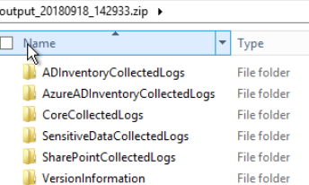
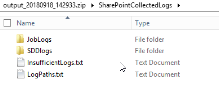

Summary: This powershell script can collect relevant logs and T2 data for engineers to more easily provide the information needed to diagnose customer issues.
Issue: The location of logs and database files are inconsistent across the various StealthAUDIT products, this powershell script will automate the collection of these logs simplifying the collection by DC and host.
Instructions: Grab the PowerShell script from : https://downloads.stealthbits.com/access/files/StealthTOOLS/AUDIT/LogCollector.zip
Right click the LogCollector.ps1 executable in the folder and click 'Run with powershell' follow the steps in powershell to choose what type of logs and files you want to collect.
The Powershell script will prompt for user input for information such as solution set logs to collect, host names, agent/applet host names, as well as search parameters.
Note: If you are not running agent or applet mode scans, when prompted for that host, you must enter the SA host name.
After you run through the steps in powershell there will be a zipped folder created inside the same folder/location the powershell script is in with the following naming convention [output_TimeStamp_ID]. The .zip file will break down the logs by relevant job and DC. It will also create .txt files containing
- the log paths and information regarding whether or not they have sufficient data for dev (based upon whether or not the host is found in the log, missing data collector messages, and application log level)
Example of what the folder will look like:

Product: StealthAUDIT
Module: SA - Core
Versions: 8.0+
Legacy Article ID: 2101